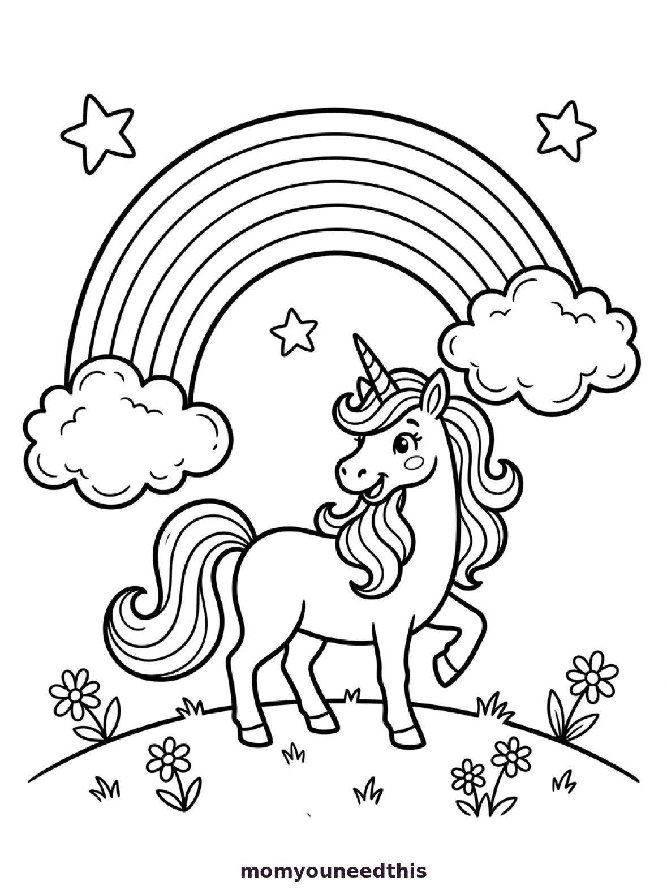
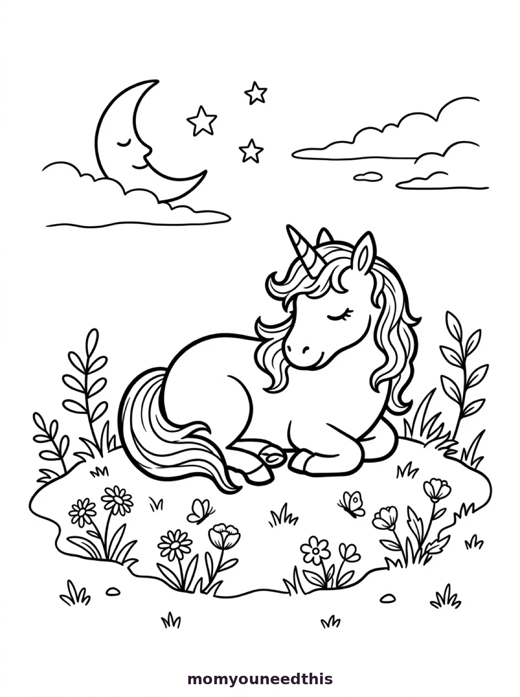
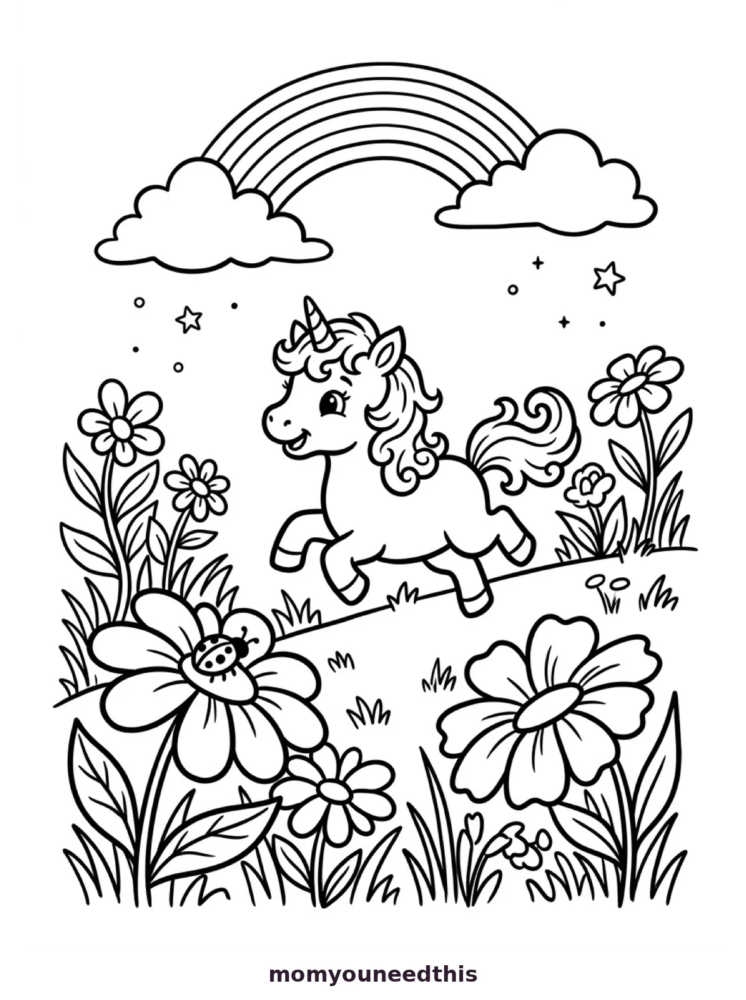

Free Unicorn Coloring Pages
Looking for free unicorn coloring pages? Download our free original Unicorn coloring page below — no signup needed. Just tap download, print at home, and let the coloring fun begin!
Quick Answer
Yes — this page has four free printable unicorn coloring pages with bold outlines and big spaces made for little hands. Download them, print them on letter-size paper, and hand over the crayons. No signup, no cost, just magical unicorns to color.
At a Glance
- Ages: 2–6
- Pages: 4 free printables
- Format: Print at home, letter size
- Cost: Free, no signup
- Supplies: Crayons or markers
- Time: 10–20 minutes
🦄 How To Use This Page
- Browse the list and pick a coloring page your child will love.
- Tap the download button to save the free coloring page to your device.
- Print on letter-size paper — print a few different designs for variety.
- Color together with crayons or markers and display the favorites.
🦄 Why Kids Love Unicorn Coloring Pages
Unicorns are the perfect coloring subject because there are no rules. A unicorn can be pink, purple, rainbow, or all three at once — and every version is correct. That freedom is exactly what makes unicorn coloring pages so good for kids: they practice choosing colors, staying roughly in the lines, and making creative decisions without any fear of getting it wrong.
The unicorn's mane is the best part. Long, flowing, and made of separate sections, it's the ideal place for kids to try color patterns — one color per strand, alternating colors, or a full rainbow. The horn gets its own color, the body gets another, and suddenly they've made a whole picture with just a few crayons.
✏️ Unicorn Coloring Tips
- Let the mane be rainbow. The mane is where kids get creative — every strand a different color is the classic unicorn look.
- Glitter crayons work great. If you have them, a sparkly horn and mane make the unicorn feel magical.
- Name the colors. "You picked purple for the mane!" turns coloring into color-word practice.
- Display it. A finished unicorn on the fridge is the fastest way to get asked for another one.
🦄 Unicorn Coloring Pages

🎨 Download Your Free Unicorn Coloring Page
A cute, original unicorn coloring page made for little hands — bold outlines, big spaces, zero signup.
⬇️ Download Free Coloring Page 🖨️ Print🎁 Free printable for toddlers & preschoolers
🌈 Unicorn and Rainbow Coloring Page

🎨 Download the Unicorn and Rainbow Coloring Page
A unicorn with a flowing mane standing on a flower hill under a big rainbow between two clouds, stars all around — bold outlines, big spaces, zero signup.
⬇️ Download Rainbow Unicorn Page 🖨️ Print Rainbow Unicorn Page🎁 Free printable for toddlers & preschoolers
🌙 Sleeping Unicorn Coloring Page

🎨 Download the Sleeping Unicorn Coloring Page
A unicorn sleeping curled up in a flower meadow under a smiling crescent moon and stars — bold outlines, big spaces, zero signup.
⬇️ Download Sleeping Unicorn Page 🖨️ Print Sleeping Unicorn Page🎁 Free printable for toddlers & preschoolers
🌼 Baby Unicorn Coloring Page

🎨 Download the Baby Unicorn Coloring Page
A baby unicorn prancing through a flower meadow, big flowers in front and a rainbow between two clouds above — bold outlines, big spaces, zero signup.
⬇️ Download Baby Unicorn Page 🖨️ Print Baby Unicorn Page🎁 Free printable for toddlers & preschoolers
More Coloring Pages
Tap any picture to open its theme page and download the free printable.

🌈 Unicorn Coloring Pages for Different Ages
Unicorn coloring pages work for a wide age range because kids approach them differently. A 2-year-old will scribble the whole page in one color — and that's perfect. They're practicing grip, pressure, and the joy of making marks. Don't worry about staying in the lines; the unicorn doesn't care.
A 3- to 4-year-old starts choosing colors on purpose. "The mane is pink!" "The horn is yellow!" This is where unicorn coloring pages really shine — the mane, horn, body, and tail are separate areas, so kids practice color planning. They decide what goes where, and every decision is theirs.
A 5- to 6-year-old can handle detail work. They might add their own patterns to the mane, draw a background, or write the unicorn's name. At this age, unicorn coloring pages become a starting point for storytelling — "This unicorn lives in a castle and eats rainbow grass." Let them add to the page. The printable is just the beginning.
For all ages, the rule is the same: let them choose. A rainbow unicorn, a black unicorn, a unicorn with a green horn — all correct. The moment you correct a color choice, coloring stops being fun and starts being a test. Keep it fun.
🦄 More Unicorn Activities
Once they've colored the unicorn, keep the magic going. Cut out the finished unicorn and glue it to a piece of cardboard to make a puppet. Tape it to a popsicle stick and put on a unicorn show. Or use it as the cover of a homemade storybook — "The Adventures of [Unicorn's Name]" — with your child dictating the story and you writing it down.
Pair the unicorn coloring page with the unicorn drawing tutorial for a two-part activity: first they draw their own unicorn in 6 steps, then they color this printable. Drawing + coloring the same subject teaches kids to see the difference between making a picture and decorating one. Both are valuable.
For a quiet-time activity, set out the unicorn coloring page with the paint by numbers sheets. Coloring the unicorn is free-form — any colors, any order. Paint by numbers is structured — match the number, fill the color. Offering both lets kids pick the style that fits their mood.
🦄 Sweet Ideas for cute unicorn coloring pages
On the portrait sheet, work from the smallest area out: colour the horn first — gold, or a glitter crayon if you have one — then pick one body colour, and save the mane for last. The mane falls in separate strands, so treat each strand as its own stripe: one colour per strand, two colours alternating pink, purple, pink, purple, or a full rainbow run from top to bottom.
For the youngest colourers, ages 2 and 3, print the baby unicorn instead, and colour the big flowers in front of it before the prancing baby itself. The sleeping unicorn, curled up under a smiling crescent moon, is the bedtime sheet: colour it in pyjamas and tape it up beside the bed.
See unicorn printable for more.

🌈 Unicorn Rainbow Coloring Pages for Magical Kids
This sheet puts the unicorn on a flower hill under one big rainbow stretched between two clouds, with stars scattered across the sky. Colour the arcs from the outside in and name each colour as it goes on — red, orange, yellow, green, blue, purple — so the rainbow order gets said out loud six times.
Leave the two clouds white, or shade them pale blue, and finish the stars with the yellow crayon already in hand. Colour the unicorn's body last, in one light colour, so the rainbow stays the brightest part of the picture. Finished, the sheet is wide and bright: tape it to your child's bedroom door, or print one per guest at a unicorn birthday and line the finished rainbows along one wall.
See unicorn sheet for more.
❓ Unicorn Coloring Pages FAQ
Are these unicorn coloring pages really free?
Yes — the coloring page on this page is a free original printable from MomYouNeedThis. Nothing here costs anything.
What ages are these coloring pages for?
They are perfect for toddlers, preschoolers, and young kids. Choose simpler designs for little ones and more detailed pages for older kids.
How do I print a coloring page?
Tap the download button above to save the free coloring page, then print it. Regular letter-size paper works perfectly. The print button opens the full-size page in a new tab if you prefer to print from there.
Are cute unicorn coloring pages good for toddlers?
Yes — cute unicorn coloring pages have bold outlines and big spaces that little hands can color easily. Keep sessions short and let your toddler pick the colors.
Are unicorn coloring pages free on this site?
Yes — unicorn coloring pages free downloads on this page cost nothing. Download, print, and color as many as you like, with no signup needed.
Are these unicorn rainbow coloring pages free to print?
Yes — these unicorn rainbow coloring pages are 100% free to download and print at home. No signup or payment needed.
Do these unicorn and rainbow coloring pages show both together?
Yes — each of these unicorn and rainbow coloring pages features a unicorn and a rainbow together on one page, so kids colour both magical favourites at once.
🔗 More Free Printables You’ll Love
- Free Alphabet Coloring Pages Free printable alphabet coloring pages for little learners.
- Free Letter B Coloring Pages Free printable letter b coloring pages for little learners.
- Free Letter C Coloring Pages Free printable letter c coloring pages for little learners.
- Free Math Coloring Pages Free printable math coloring pages for little learners.